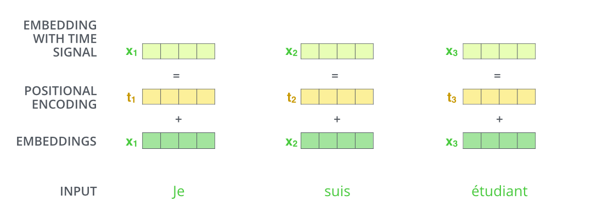
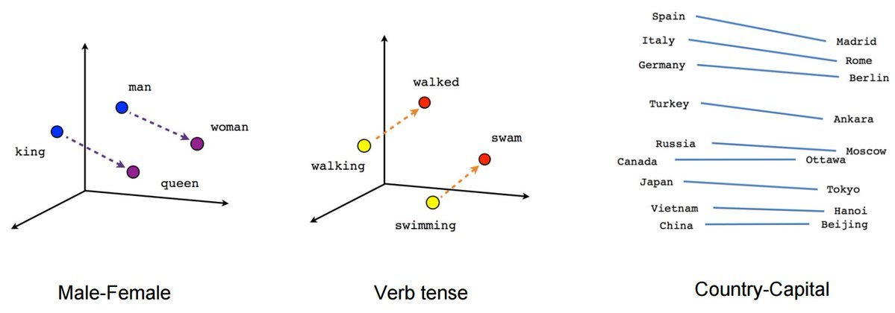

Positional Encoding 位置编码#
下图的步骤:
input（输入）
embeddings（嵌入）
positional encoding（位置编码）
embeddings with time signal（带有时间信号的嵌入）
为了让模型了解单词的顺序，我们添加了位置编码向量\(t_1\)
如果我们假设嵌入的维数为 4，则实际的位置编码将如下所示

可以通过下图更直观的看到在向量数据库中两个词的相关性 
可以看到图中向量(“king”)-向量(“man”)\(\approx\)向量(“queen”)-向量(“woman”)，下面我们用代码演示
from torchtext.vocab import GloVe # 导入GloVe词向量
# 简单介绍一下GloVe词向量，它是斯坦福大学的研究者在2014年开发和发布的
# GloVe和word2vec与fasttext是当前最常用的3个词向量版本
# 6B表示了模型是基于60亿个单词的语料库训练的
# 300表示一个单词，使用300维的向量表示
import torch.nn.functional as F
# 加载GloVe词向量，并将下载好的文件缓存到指定路径
glove=GloVe(name='6B', dim=300,cache='../../raw/data/')
word_vec = glove['cat'] # 获取单词 'cat' 的 300 维词向量
print(word_vec.shape) # 输出：torch.Size([300])
word1 = glove['king']
word2 = glove['queen']
similarity = F.cosine_similarity(word1.unsqueeze(0), word2.unsqueeze(0))
print(similarity) # 输出两个词的余弦相似度
---------------------------------------------------------------------------
ModuleNotFoundError Traceback (most recent call last)
Cell In[1], line 1
----> 1 from torchtext.vocab import GloVe # 导入GloVe词向量
2 # 简单介绍一下GloVe词向量，它是斯坦福大学的研究者在2014年开发和发布的
3 # GloVe和word2vec与fasttext是当前最常用的3个词向量版本
4 # 6B表示了模型是基于60亿个单词的语料库训练的
5 # 300表示一个单词，使用300维的向量表示
6 import torch.nn.functional as F
ModuleNotFoundError: No module named 'torchtext'
import torch
from torch import nn
from sklearn.decomposition import PCA # 导入PCA模块用于降维
import matplotlib.pyplot as plt # 导入Matplotlib用于绘制图形
# 使用nn.Embedding创建词嵌入层
# 将glove.vectors，通过from_pretrained接口，导入到Embedding层中
# 此时的embedding层，已经载入了GloVe词向量数据
embedding = nn.Embedding.from_pretrained(glove.vectors)
# 打印embedding层中的weight的尺寸
# 该尺寸即为词表大小（单词数）× 词向量维度
print(f"embedding.shape： {embedding.weight.shape}")
# 定义要测试的单词列表
words = ['man', 'woman', 'king', 'queen', 'cat', 'dog', 'mother', 'father']
indices = []
# 遍历单词，将每个单词转化为其在GloVe词典中的索引
for word in words:
index = glove.stoi[word] # glove.stoi是单词到索引的映射表
indices.append(index) # 将索引加入列表
print(f'{word} -> {index}') # 输出单词及其对应的索引
indices = torch.tensor(indices) # 将索引转换为张量格式
# 将索引传入embedding层，得到对应的词向量矩阵
vectors = embedding(indices).detach().numpy() # 通过detach()避免计算梯度
print(f"vectors.shape: {vectors.shape}") # 打印词向量矩阵的形状，应该是(8, 300)
# 使用PCA将300维的词向量降到2维
pca = PCA(n_components=2)
vectors_2d = pca.fit_transform(vectors) # 将词向量转换为二维
# 绘制二维词向量散点图
plt.scatter(vectors_2d[:, 0], vectors_2d[:, 1])
# 为每个单词在图上标注标签
for i, word in enumerate(words):
plt.annotate(word, xy=(vectors_2d[i, 0], vectors_2d[i, 1]), xytext=(-10, 10), textcoords='offset points')
# 显示图形
plt.show()
---------------------------------------------------------------------------
ModuleNotFoundError Traceback (most recent call last)
Cell In[2], line 3
1 import torch
2 from torch import nn
----> 3 from sklearn.decomposition import PCA # 导入PCA模块用于降维
4 import matplotlib.pyplot as plt # 导入Matplotlib用于绘制图形
6 # 使用nn.Embedding创建词嵌入层
7 # 将glove.vectors，通过from_pretrained接口，导入到Embedding层中
8 # 此时的embedding层，已经载入了GloVe词向量数据
ModuleNotFoundError: No module named 'sklearn'
简单的比方#
下面是三个词嵌入的向量：
“机器学习”表示为 [1,2,3] “深度学习”表示为[2,3,3] “DOTA”表示为[9,1,3]
然后使用位置编码进行计算：
使用余弦相似度（余弦相似度是一种用于衡量向量之间相似度的指标，可以用于词嵌入之间的相似度）在计算机中来判断文本之间的距离：
机器学习”与“深度学习”的距离：
\[\cos \left(\Theta_{1}\right)=\frac{1 * 2+2 * 3+3 * 3}{\sqrt{1^{2}+2^{2}+3^{3}} \sqrt{2^{2}+3^{2}+3^{3}}}=0.97\]
“机器学习”与“DOTA“的距离”：
\[\cos \left(\Theta_{2}\right)=\frac{1 * 9+2 * 1+3 * 3}{\sqrt{1^{2}+2^{2}+3^{3}} \sqrt{9^{2}+1^{2}+3^{3}}}=0.56\]
“机器学习”与“深度学习”两个文本之间的余弦相似度更高，表示它们在语义上更相似。
常见的词嵌入算法包括 Word2Vec、GloVe、FastText 等。这些算法通过预训练或自行训练的方式，将单词或短语映射到低维向量空间中，从而能够在计算机中方便地处理文本数据。